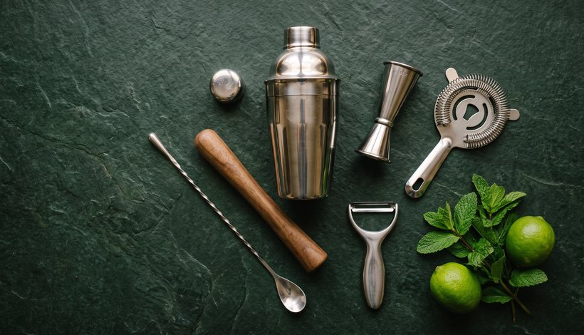

הבר הביתי
בחרו מתכון, בדקו מה כבר יש בבית והשלימו רק את הציוד והמרכיבים שחסרים.

כלי עבודה
לכל כלי תפקיד אחר. הקישורים מובילים למתכונים שבהם משתמשים בו.
-
ג׳יגר או כלי מדידה מסומן
ג׳יגר הוא כלי קטן למדידת נוזלים. בדקו אילו כמויות מסומנות עליו, החזיקו אותו ישר ומזגו עד הסימון המתאים.
מתרגלים מדידה במוחיטו -
כף ארוכה
כף בר מאפשרת לערבב לאורך דופן הכוס, בין הקרח לנוזל. בנגרוני מכינים ומערבבים את המשקה בכוס ההגשה עצמה.
מערבבים נגרוני -
שייקר ומסננת
השייקר מחבר את המרכיבים באמצעות ניעור עם קרח. לשייקר מסוג קובלר יש מסננת מובנית; בשייקר משני חלקים משתמשים גם במסננת נפרדת. אלה הכלים להכנת אספרסו מרטיני.
מנערים אספרסו מרטיני
להעמקה באנגלית: Campari Academy: מדידה בג׳יגר · סוגי שייקרים.
המרכיבים
במוחיטו תצטרכו רום לבן, ליים, נענע, סוכר וסודה. לנגרוני נדרשים ג׳ין, קמפרי וורמוט אדום. באספרסו מרטיני מצטרפים לוודקה ליקר קפה, אספרסו וסירופ סוכר.
סדרו את הכוס, כלי המדידה והקישוט לידכם. קראו פעם אחת את כל שלבי ההכנה ורק אז הוסיפו את הקרח. את הכמויות המדויקות תמצאו בפתק של כל מתכון.
מונח חדש? פותחים את מילון הברבחירת מתכון
- משהו רענן: מוחיטו
הכנה בכוס גבוהה, נענע וליים.
- משהו מריר: נגרוני
שלושה מרכיבים במידה שווה, ערבוב בכוס נמוכה.
- משהו עם קפה: אספרסו מרטיני
ניעור בשייקר וסינון לכוס מקוררת.